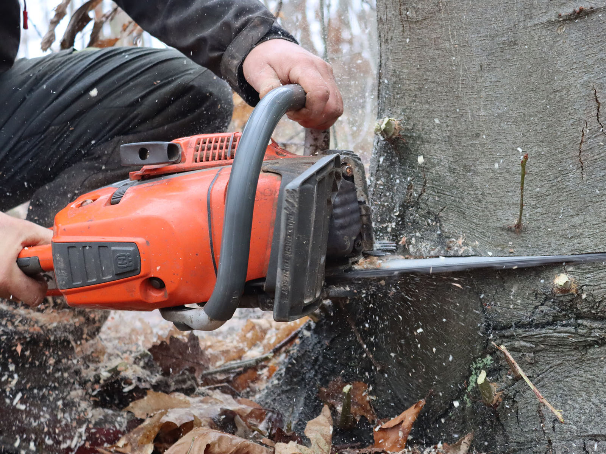
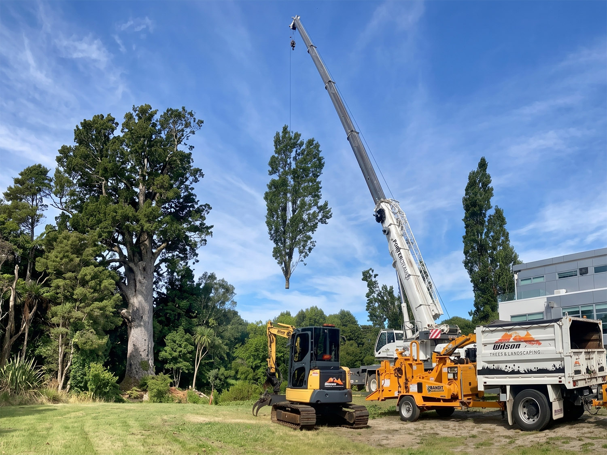

Van snoeien tot echte verzorging — altijd met de boom centraal en met een voorafgaande briefing naar de klant.

Klik op een dienst voor meer informatie en voorbeelden uit de praktijk.
Vakkundige snoeiwerken conform ETW-normen. Lode snoeit in de eerste plaats in functie van de boom, en diens toekomstbeeld.
Offerte aanvragenDe juiste boom op de juiste plek. Lode kijkt naar de groeiplaats en koppelt dit terug aan uw wensen. Zo planten we samen gericht aan, zonder zorgen nadien.
Meer infoWanneer vellen de enige of beste optie is — veilig en vakkundig uitgevoerd.
Meer infoSnelle en veilige interventie na storm of windval. Veiligheid eerst, en waar mogelijk trachten we de boom te behouden.
Meer infoGoede groeiomstandigheden voor uw boom is key! Alles begint onder de grond, en net daar gaat onvoldoende aandacht naar!
Meer infoWat maakt Stamgast anders? Dit project laat het zien.

Ecologie & beheerEen beuk van meer dan een eeuw oud, die door een andere vakman al was opgegeven. Lode voerde een grondige inspectie uit, stelde een behandelplan op en gaf de boom een tweede leven — zonder vellen.
Bekijk meer projectenEerlijkheid betekent ook duidelijk zijn over wat niet past binnen onze filosofie.